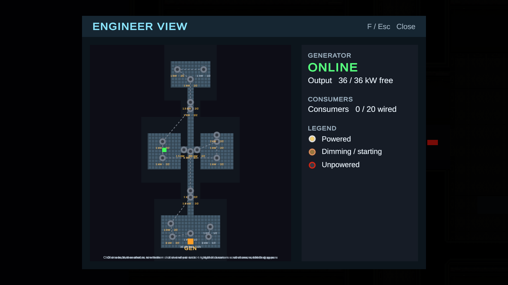
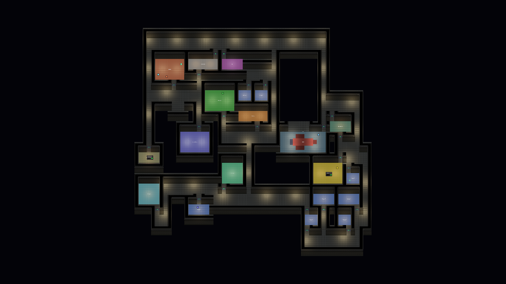

A Galactic Journey
Crew a ship together: power it, fly it, and shoot down the storm.

What it is
A Galactic Journey is a 2D top-down game set aboard a spaceship and on space stations. You walk around on foot, and the ship's systems are things you operate at stations: a pilot's chair to fly, a gunnery console to aim the turret, and a generator and engineer console that decide where the power goes.
Power is the central idea. Engines, doors, lights and consoles all draw from a shared generator grid, and the engineer decides what is wired to what. Cut the power to an engine and the ship flies differently; cut it to a door and you have to crank it open by hand. Recurring asteroid storms come at the ship from all sides and have to be shot down by the turret gunner.
Play with up to 4 players in co-op, or on your own.
Spotlight
A power grid you wire yourself
Every powered thing on the ship (engines, doors, lights, the gunnery console) draws from a generator that can only supply so much. The engineer opens a schematic map of the ship and clicks one node and then another to wire them together, or clicks a wired pair again to cut it. A starved engine glows dimmer and pushes less, a door without power stays shut, and a gunnery console without power cannot be used at all. It turns "keep the ship running" into a puzzle the crew solves out loud, because whatever you power up, something else may go dark.

A ship you fly with physical thrusters
The pilot sits in the bridge chair and flies the ship with W/S for forward and reverse, A/D to slide sideways and Q/E to turn. The ship is not steered by magic: each thruster pushes at its own place on the hull, and the main engines only push as hard as their power allows. If one engine dies, the ship drifts and swings round, and the remaining thrusters work to counter the spin as far as they can. It makes the engineer's decisions felt immediately by the pilot.
Asteroid storms and the gunnery turret
At intervals a wave of small asteroids is launched at the ship from every direction. The gunner takes the turret console, and the camera pulls out to the ship; the twin barrels follow the mouse but can only turn so fast, so you have to lead your shots. Any asteroid that reaches the hull bursts and shoves the ship. The turret needs power from the grid, so a gunner loses the gun if the power goes out mid-wave.
Procedural space stations
Stations are generated from a 16-digit seed, so the same seed always gives the same station: rooms, corridors, doors and residents. Each resident has a schedule and walks to different rooms through the day, which you can follow with the station clock and speed controls, or by selecting residents on the map.

Features
- Walk around the ship on foot, with a dash
- Pilot chair with forward, reverse, sideways slide and turning
- Physical ship flight with a thruster at each point on the hull
- Twin-barrelled turret that follows the mouse and fires laser bolts
- Recurring asteroid storms from every direction
- Shared power grid with a limited-capacity generator
- Engineer view: wire and cut power connections on a schematic map
- Power doors that open as you approach, or by hand when unpowered
- Engine glow that follows its power supply
- Handheld laser gun, and player health with respawn
- Co-op for up to 4 players, or single-player
- Seed-based procedural space stations
- Station residents with daily schedules, and a free-look camera with pan and zoom